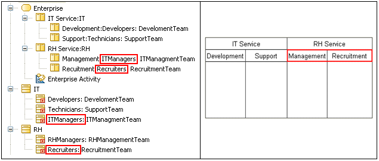

The Parts represented by “sibling” ActivityPartitions must be Parts of the same Classifier.
If an ActivityPartition represents a Part of a Classifier, then all the non-external ActivityPartitions in the same dimension and at the same level of nesting in that dimension must represent Parts directly contained in the internal structure of the same Classifier.
Example:

The rule is invalid for the “RH Service” ActivityPartition, because it contains ActivityPartitions which represent Parts of different Classifiers.
Getting an R1080 error indicates an inconsistency between the organization of the ActivityPartitions and the structure of the Parts they represent. The solution usually implies the reorganization of the ActivityPartitions to respect the design expressed by the structure of the represented Parts, or the modification of the design of the represented Parts so they respect the responsibility scheme expressed by the organization of the ActivityPartitions.